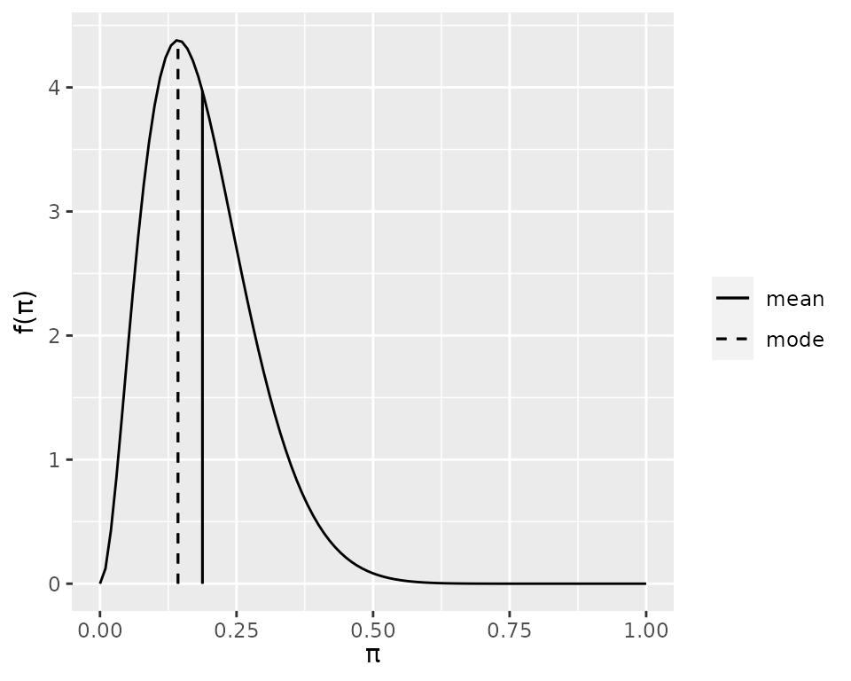
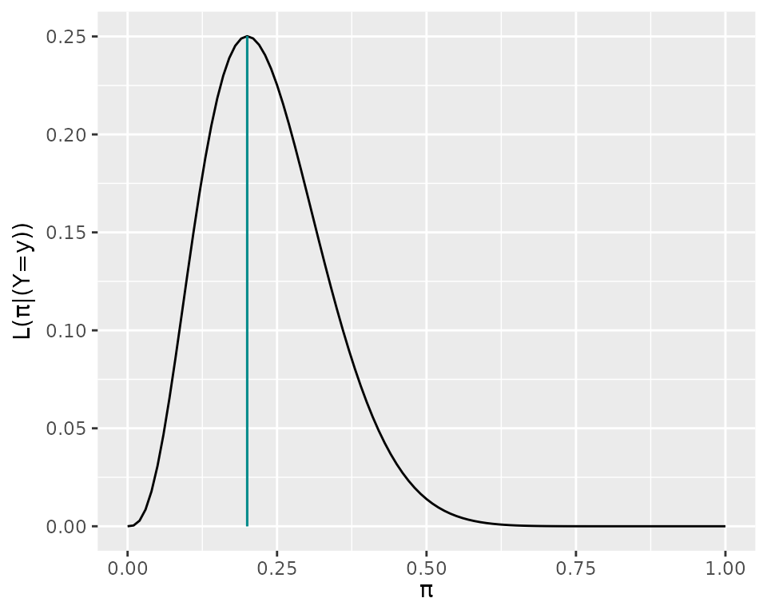
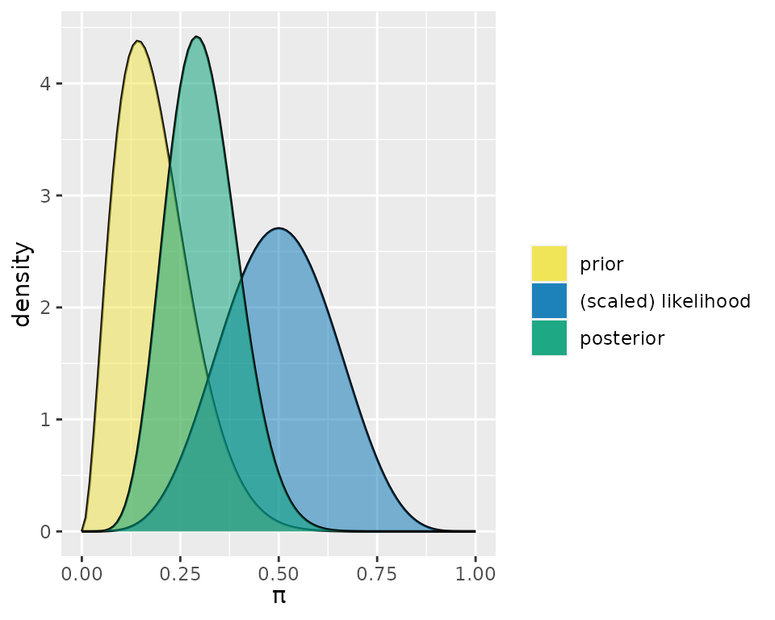
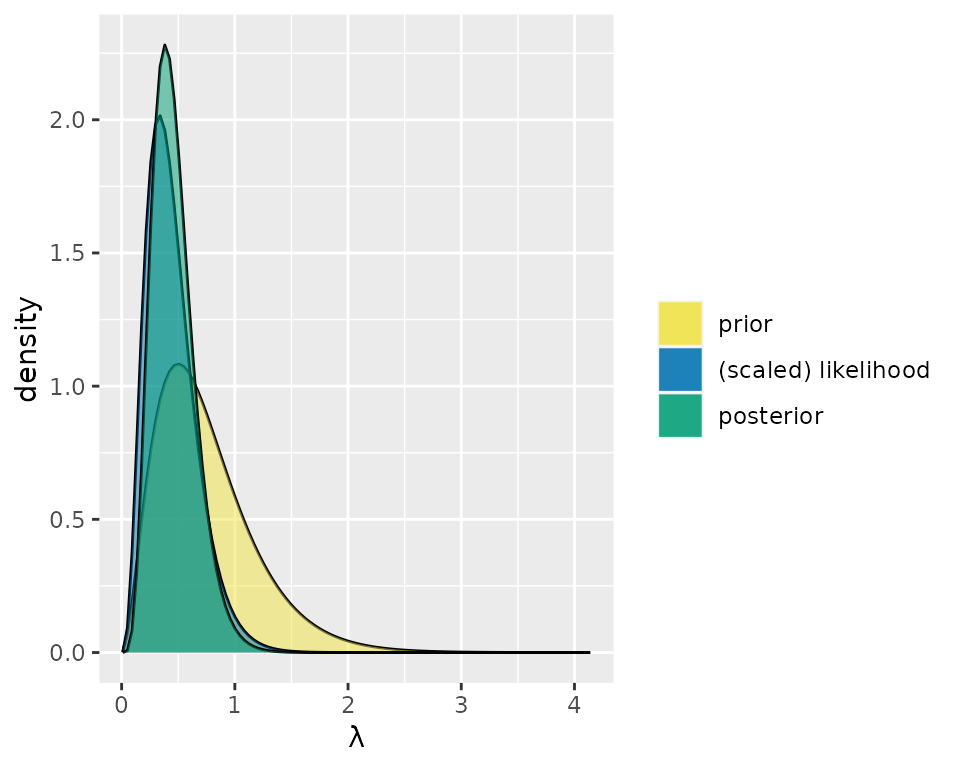

The bayesrules package has a set of functions that support exploring Bayesian models from three conjugate families: Beta-Binomial, Gamma-Poisson, and Normal-Normal. The functions either help with plotting (prior, likelihood, and/or posterior) or summarizing the descriptives (mean, mode, variance, and sd) of prior and/or posterior.
We use the Beta-Binomial Model to show the different set of functions and the arguments.
plot_beta(alpha = 3, beta = 13, mean = TRUE, mode = TRUE)
summarize_beta(alpha = 3, beta = 13)
#> mean mode var sd
#> 1 0.1875 0.1428571 0.008961397 0.09466466In addition plot_binomial_likelihood() helps users visualize the likelihood function and shows the maximum likelihood estimation.
plot_binomial_likelihood(y = 3, n = 15, mle = TRUE)
The two other functions plot_beta_binomial() and summarize_beta_binomial() require both the prior parameters and the data for the likelihood.
plot_beta_binomial(alpha = 3, beta = 13, y = 5, n = 10,
prior = TRUE, #the default
likelihood = TRUE, #the default
posterior = TRUE #the default
)
summarize_beta_binomial(alpha = 3, beta = 13, y = 5, n = 10)
#> model alpha beta mean mode var sd
#> 1 prior 3 13 0.1875000 0.1428571 0.008961397 0.09466466
#> 2 posterior 8 18 0.3076923 0.2916667 0.007889546 0.08882312For Gamma-Poisson and Normal-Normal models, the set of functions are similar but the arguments are different for each model. Arguments of the Gamma-Poisson functions include the shape and rate of the Gamma prior and sum_y and n arguments related to observed data which represent the sum of observed data values and number of observations respectively.
plot_gamma_poisson(
shape = 3,
rate = 4,
sum_y = 3,
n = 9,
prior = TRUE,
likelihood = TRUE,
posterior = TRUE
)
For the Normal-Normal model functions, the prior Normal model has the mean and sd argument. The observed data has sigma, y_bar, and n which indicate the standard deviation, mean, and sample size of the data respectively.
summarize_normal_normal(mean = 3.8, sd = 1.12, sigma = 5.8, y_bar = 3.35, n = 8)
#> model mean mode var sd
#> 1 prior 3.800000 3.800000 1.254400 1.1200000
#> 2 posterior 3.696604 3.696604 0.966178 0.9829435